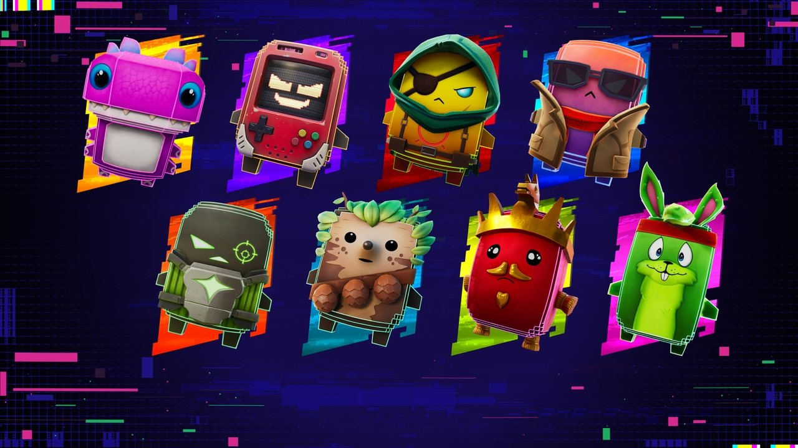

Sprite Club
The first rule of Sprite Club: collect them all. The second rule: actually use their powers. A beginner's guide to this season's tiny helpers.

Sprites are this season's little helpers: chunky, colourful creatures you find around the Island. Each one carries a Sprite Power. Extract a Sprite, equip it, and its power works for you during the match. Level it up and it gets stronger. Every Sprite you find is added to your Collection, and like any good collection, the hard part is stopping.
New for FortnitemaresThe Halloween Sprites
Spooky Dash
Dash into a fight or out of trouble. Its charges replenish over time, so don't hoard them.
Vampire
Recover health as you damage enemies. Perfect if you like to play aggressively.
The Deer
Makes your melee attacks hit harder. Fun, but most fights are won with weapons, not pickaxes.
Dumpster Dive
Jump into a hiding spot to find food that restores extra health. Sneaky, and great for staying alive.
Honey
Sends bees after anyone who damages you. Revenge, but buzzier.
Obsession
A helper Sprite that lets One Wish Willow help you collect other Sprites. The ultimate collector's companion.
How to find themWhere Sprites hide
- Pumpkin Chests: new for Fortnitemares, and a good source of the Halloween Sprites.
- The "Trick or Treat" Cheat Code: find one of the season's Cheat Codes on the map, enter it, and you can get a Sprite plus a bonus reward in that match.
- Vaults and bosses: the Stone Sanctum vault has Sprites in it too (see page 10).
Sprites in Ranked?
Yes, but with a twist. Sprites now appear in Ranked matches, but their abilities are switched off "to maintain even competition", as Epic puts it. So in Ranked, a Sprite is a collectible, not a superpower. It's fair: skill decides Ranked, not luck.
The Chug Jug verdict
Sprites are the best new idea of the season: easy to understand, fun to collect, and just powerful enough to change a fight without breaking the game. If you only equip one this month, make it Spooky Dash.